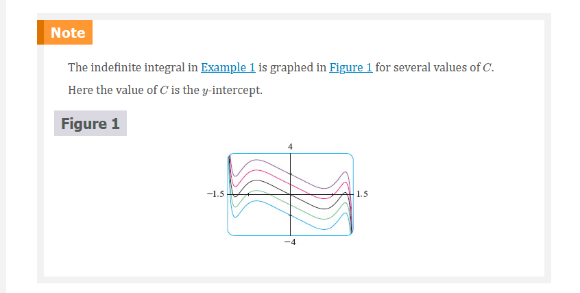
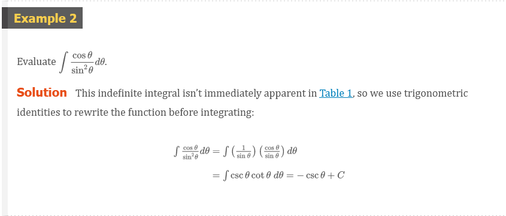
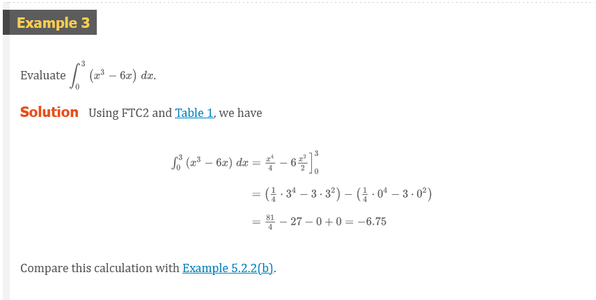
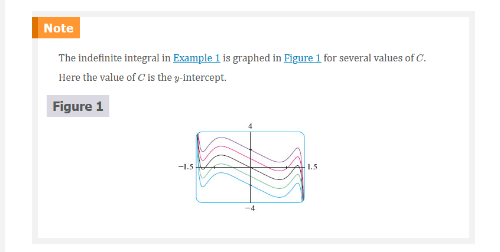
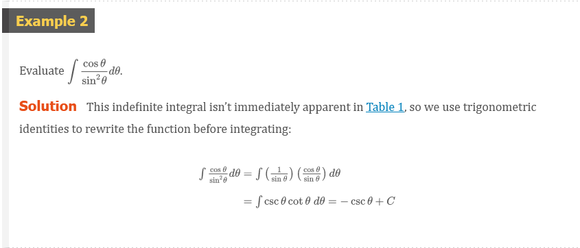
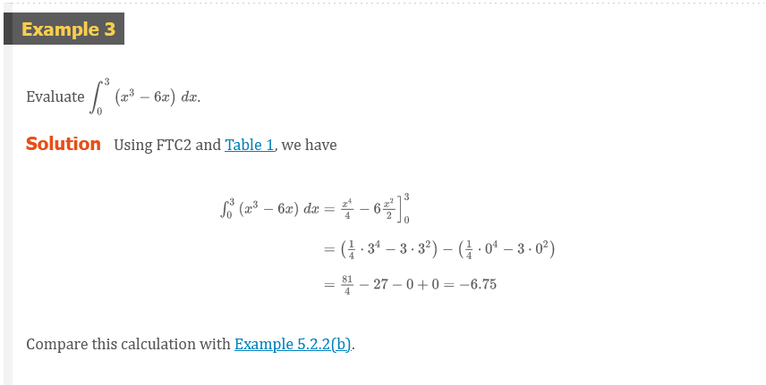
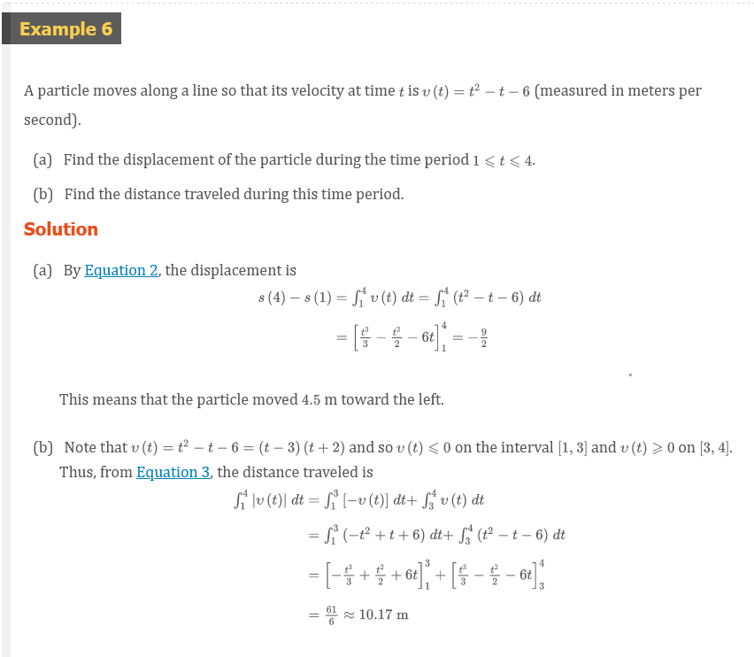
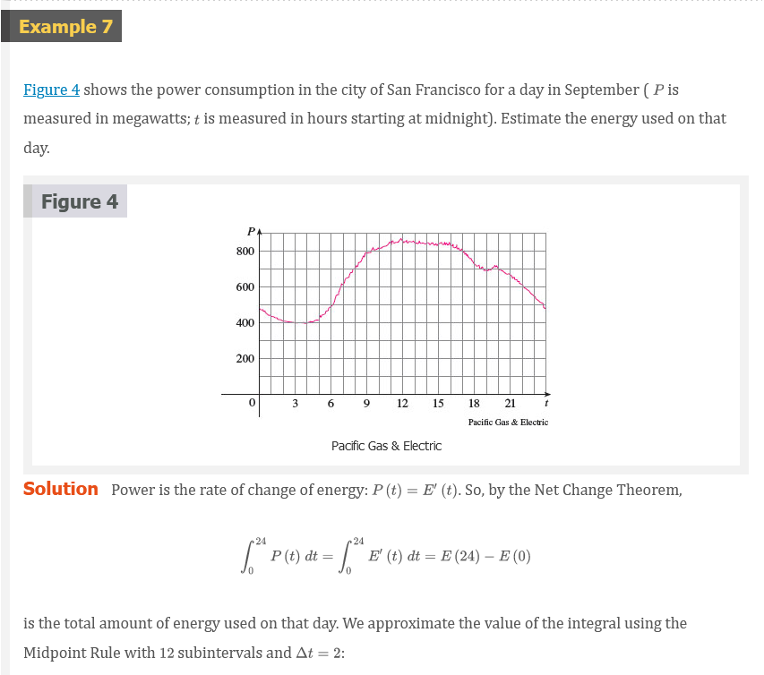
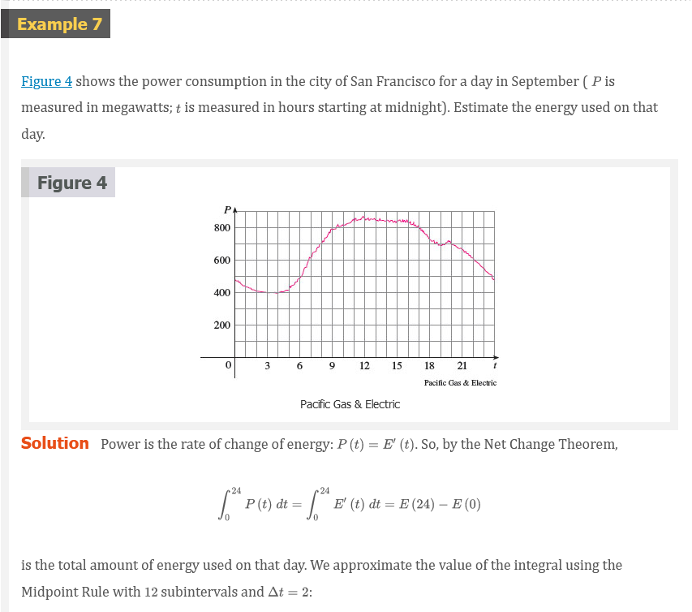

Chapter 5.4: Indefinite Integrals and the Net Change Theorem
Indefinite Integrals
Both parts of the Fundamental Theorem establish connections between antiderivatives and definite integrals. Part 1 says that if \(f\) is continuous, then \(\int_{a}^{x} f(t)dt\) is an antiderivative of. Part 2 says that \(\int_{a}^{b} f(x)dx\) can be found by evaluating \(F(b) - F(a)\), where \(F\) is an antiderivative of \(f\).
We need a convenient notation for antiderivatives that makes them easy to work with. Because of the relation between antiderivatives and integrals given by the Fundamental Theorem, the notation \(\int f(x)dx\) is traditionally used for an antiderivative of \(f\) and is called an indefinite integral. Thus
\[ \int f(x)dx = F(x) \]
means
\[ F^{\prime}(x) = f(x) \]
For example, we can write
\[ \int x^{2}dx = \frac{x^{3}}{3} + C \]
because
\[ \frac{d}{dx}\left ( \frac{x^{3}}{3} + C \right ) = x^{2} \]
So we can regard an indefinite integral as representing an entire family of functions (one antiderivative for each value of the constant \(C\)).
You should distinguish carefully between definite and indefinite integrals. A definite integral \(\int_{a}^{b} f(x)dx\) is a number, whereas an indefinite integral \(\int f(x)dx\) is a function (or family of functions). The connection between them is given by Part 2 of the Fundamental Theorem: If \(f\) is continuous on \([a, b]\), then
\[ \int_{a}^{b} f(x)dx = \int f(x)dx]_{a}^{b} \]
The effectiveness of the Fundamental Theorem depends on having a supply of antiderivatives of functions. We therefore restate the Table of Antidifferentiation Formulas from Section 4.9, together with a few others, in the notation of indefinite integrals. Any formula can be verified by differentiating the function on the right side and obtaining the integrand. For instance,
\[ \int \sec^{2}(x)\;dx = \tan(x) + C \]
because
\[ \frac{d}{dx}(\tan(x) + C) = \sec^{2}(x) \]
Table of Indefinite Integrals 1
\[ \begin{array}{ll} \int cf(x)dx = c \int f(x)dx & \int [f(x) + g(x)]dx = \int f(x)dx + \int g(x)dx \\ \int k\;dx = kx + C \\ \int x^{n}dx = \frac{x^{n + 1}}{n + 1} + C(n \neq - 1) & \int \frac{1}{x}dx = \ln |x| + C\\ \int e^{x}dx = e^{x} + C & \int b^{x}dx = \frac{b^{x}}{\ln(b)} + C \\ \int \sin(x)\;dx = -\cos(x) + C & \int \cos(x)dx = \sin(x) + C \\ \int \sec^{2}(x)dx = \tan(x) + C & \int \csc^{2}(x)dx = -\cot(x) + C \\ \int \sec(x)\tan(x)dx = \sec(x) + C & \int \csc(x)\cot(x)dx = - \csc(x) + C \\ \int \frac{1}{x^{2} + 1}dx = \tan^{-1}(x) + C & \int \frac{1}{\sqrt{1 - x^{2}}}dx = \sin^{-1}(x) + C \\ \int \sinh(x)dx = \cosh(x) + C & \int \cosh(x)dx = \sinh(x) + C \end{array} \]
Recall from Theorem 4.9.1 that the most general antiderivative on a given interval is obtained by adding a constant to a particular antiderivative. We adopt the convention that when a formula for a general indefinite integral is given, it is valid only on an interval. Thus we write
\[ \int \frac{1}{x^{2}}dx = -\frac{1}{x} + C \]
with the understanding that it is valid on the interval \((0, \infty)\) or on the interval \((-\infty, 0)\). This is true despite the fact that the general antiderivative of the function $f(x) = 1/x^{2}$, \(x \neq 0\), is
\[ F(x) = \left\{\begin{matrix} -\frac{1}{x} + C_{1} \;\;\; if x < 0 \\ -\frac{1}{x} + C_{2} \;\;\; if x > 0 \\ \end{matrix}\right. \]
   
   


Applications
Part 2 of the Fundamental Theorem says that if \(f\) is continuous on \([a, b]\), then
\[ \int_{a}^{b} f(x)dx = F(b) - F(a) \]
where \(F\) is any antiderivative of \(f\). This means that \(F^{\prime} = f\), so the equation can be rewritten as
\[ \int_{a}^{b} F^{\prime}(x)dx = F(b) - F(a) \]
We know that \(F^{\prime}(x)\) represents the rate of change of \(y = F(x)\) with respect to \(x\) and \(F(b) - F(a)\) is the change in \(y\) when \(x\) changes from \(a\) to \(b\). [Note that \(y\) could, for instance, increase, then decrease, then increase again. Although might change in both directions, \(F(b) - F(a)\) represents the net change in \(y\).] So we can reformulate FTC2 in words as follows.
Net change Theorem
The integral of a rate of change is the net change:
\[ \int_{a}^{b} F^{\prime}(x)dx = F(b) - F(a) \]
This principle can be applied to all of the rates of change in the natural and social sciences that we discussed in Section 3.7. Here are a few instances of this idea:
If \(V(t)\) is the volume of water in a reservoir at time \(t\), then its derivative \(v^{\prime}(t)\) is the rate at which water flows into the reservoir at time \(t\). So
\[ \int_{t_{1}}^{t_{2}} V^{\prime}(t)dt = V(t_{2}) - V(t_{1}) \]
is the change in the amount of water in the reservoir between time \(t_{1}\) and time \(t_{2}\).
If \([C](t.html)\) is the concentration of the product of a chemical reaction at time \(t\), then the rate of reaction is the derivative \(d[C]/dt\). So
\[ \int_{t_{1}}^{t_{2}} \frac{d[C]}{dt}dt = [C](t_{2}) - [C](t_{1}.html) \]
is the change in the concentration of \(C\) from time \(t_{1}\) to time \(t_{2}\).
If the mass of a rod measured from the left end to a point \(x\) is \(m(x)\), then the linear density is \(\rho(x) = m^{\prime}(x)\). So
\[ \int_{a}^{b} \rho(x)dx = m(b) - m(a) \]
is the mass of the segment of the rod that lies between \(x = a\) and \(x = b\).
If the rate of growth of a population is \(dn/dt\), then
\[ \int_{t_{1}}^{t_{2}} \frac{dn}{dt}dt = n(t_{2}) - n(t_{1}) \]
is the net change in population during the time period from \(t_{1}\) to \(t_{2}\). (The population increases when births happen and decreases when deaths occur. The net change takes into account both births and deaths.)
If \(C(x)\) is the cost of producing \(x\) units of a commodity, then the marginal cost is the derivative \(C^{\prime}(x)\). So
\[ \int_{x_{1}}^{x_{2}} C^{\prime}(x)dx = C(x_{2}) - C(x_{1}) \]
is the increase in cost when production is increased from \(x_{1}\) units to \(x_{2}\) units.
If an object moves along a straight line with position function \(s(t)\), then its velocity is \(v(t) = s^{\prime}(t)\), so
Definition 2
\[ \int_{t_{1}}^{t_{2}} v(t)dt = s(t_{2}) - s(t_{1}) \]
is the net change of position, or displacement, of the particle during the time period from \(t_{1}\) to \(t_{2}\). In Section 5.1 we guessed that this was true for the case where the object moves in the positive direction, but now we have proved that it is always true.
- If we want to calculate the distance the object travels during the time interval, we have to consider the intervals when \(v(t) \ge 0\) (the particle moves to the right) and also the intervals when \(v(t) \le 0\) (the particle moves to the left). In both cases the distance is computed by integrating \(|v(t)|\), the speed. Therefore
Definition 3
\[ \int_{t^{1}}^{t^{2}} |v(t)|dt = \text{ total distance traveled } \]
Figure 3 shows how both displacement and distance traveled can be interpreted in terms of areas under a velocity curve.
\[ \text{ displacement } = \int_{t_{1}}^{t_{2}} v(t)dt = A_{1} - A_{2} + A_{3} \\ \text{ distance } = \int_{t_{1}}^{t_{2}} |v(t)|dt = A_{1} + A_{2} + A_{3} \]
The acceleration of the object is \(a(t) = v^{\prime}(t)\), so
\[ \int_{t_{1}}^{t_{2}} a(t)dt = v(t_{2}) - v(t_{1}) \]
is the change in velocity from time \(t_{1}\) to time \(t_{2}\).
  
 
A Note on Units
How did we know what units to use for energy in Example 7? The integral \(\int_{0}^{24} P(t)dt\) is defined as the limit of sums of terms of the form \(P(t_{i}^{*}\Delta{t}\). Now \(P(t_{i}^{*})\) is measured in megawatts and \(\Delta{t}\) is measured in hours, so their product is measured in megawatt-hours. The same is true of the limit. In general, the unit of measurement for \(\int_{a}^{b} f(x)dx\) is the product of the unit for \(f(x)\) and the unit for \(x\).
Resources
Textbook